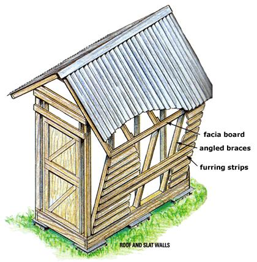
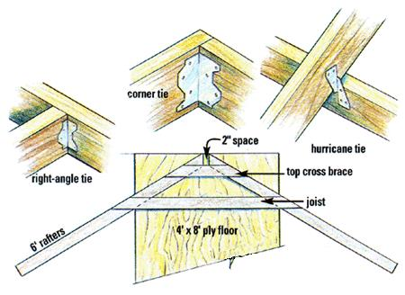
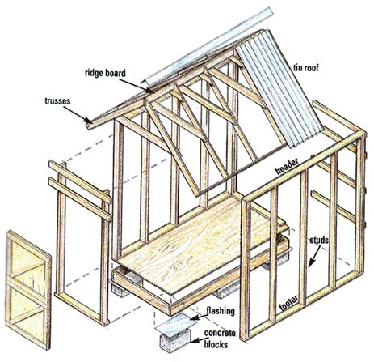

The perfect storehouse for corn cobs and grain bags.
CONSTRUCTION FOOTING:
1. Locate an area that is level, sunny, open to wind flow, handy to fields or garden and house and within the mowed area of the homeplace.
2. Lay out a 4' x 8' rectangle of sod, with long side facing prevailing wind.
Illustrations: WILL SHELTON
3. Dig out sod and loose topsoil inside rectangle. With stakes, line level and plumb bob, dig soil surface at corners and at midpoint of long sides so hole bottoms are all on the same level plane.
4. Set concrete blocks at corners and midpoint of long dimension. Stack blocks two high if needed to rise at least 4" above ground level (use mortar if three blocks high).
PLATFORM:
1. Locate 2" x 6" x 8" PTs (standing on edge) along both long sides of plywood floor. Fasten (through ply) to underside of floor with 3" nails or deck screws.
2. Cut remaining 2" x 6" x 8' into two approx. 3'-9" boards to fit on edge snugly between ends of long side boards. Fasten to underside of ply. Join board ends together at corners with nails and with right-angled metal corner ties located inside of joints.
3. As anti-rodent shield, cement (with roofing cement) sheet aluminum flashing on top of blocks so that it extends 3" beyond all edges. Leave loose and floppy so corn-hungry critters can't get a foothold.
4. Set platform on blocks. Shim level and firm to eliminate wobble.
ROOF TRUSSES:
1. From center point at one end of platform floor, mark rafter pattern to make A-shaped roof trusses. Mark each rafter to describe a 30° angle from the horizontal end of platform.
2. Cut the five 2 x 4 x 12' boards at a 60° angle across the midpoint of the board to make ten 6'-long rafters.
3. Lay out pairs of rafters at 30° in an A shape, with 60° angle end cuts facing at the center mark on floor edge. Set angle-cut faces 2 apart to make a notch to accept a 2 x 4 horizontal ridge board.
4. Cut a pair of 2 x 4 horizontal cross braces to fit across and connect each set of angled rafters: one to fit across rafters 4 down from peak to make a bottom for the 2 x 4 top notch; a second (the roof joist) to connect rafters where they reach the 4' span that is the width of the crib-the bottom edge of the joist placed where the rafters' lower edges intersect the long sides of the ply floor.
5. Trim ends of cross braces to match angle of rafters and fasten to rafters
CRIB WALLS:
1. Prefab two 8' x 8'-3" high crib side-wall frames from stock 2 x 4 x 8's, doubling boards on ends and arraying vertical studs 24" on center that is, three single vertical 2 x 4 x 8's fastened between top (header) board and bottom (footer), and spaced 2', 4' and 6' from ends.
2. Raise side-wall frames to the vertical; angle-brace with scrap lumber. Assure wall is vertical and fasten footer (bottom horizontal board) to floor every 6".
3. Connect top of side-wall frames across ends of crib with 2 x 4 x 4' crossbeams. Fasten approx.
3'-9" boards to floor between side walls at each end.
4. On the door end, fasten a second 4' crossbeam 1' down from top, then cut to size and fasten a pair of vertical 2 x 4 door frames 36" apart between lower crossbeam and floor.
5. At the other (closed) end, fasten horizontal 4' crossbeams at top and 1',3' and 5' down.
6. Tack a temporary brace or two across tops of side walls and remove angle braces.
ATTACHING ROOF TRUSSES
1. Set up step ladder at one end of crib.
2. On headers (both sides) and on a 2 x 4 x 8' roof-ridge board, mark five rafter locations 2' apart: one at each end and at 2', 4' and 6' between them.
3. Insert one end of ridge board into notch at top of a truss. Fasten with one small nail. Set truss on top of frame, bottom of "A" at one end. Rotate truss vertical so its horizontal joist stands upright atop the headers, and nudge to edge of crib. Brace with ridge board. Set truss vertical and even with end of crib. Using angled nails (toe nailing) and galvanized rafter connection plates (hurricane ties), fasten end-truss to headers.
4. Rotate remaining trusses vertical. Insert ridge board into the peak notch of each truss at appropriate mark on ridge board and fasten to header at marks with nails and hurricane ties.
5. Assure that all trusses are vertical and attach peaks of trusses to ridge board with power screws.
6. Using right-angled metal ties on both sides of joints, fasten a 2 x 4 x 8' facia board to ends of rafters.
ATTACHING ANGLED BRACES AND SLAT WALLS:
1. Under each rafter, set 2 x 4 x 8's with one end on edge of floor, angled out to rest on roof facia board beside rafters. Measure and mark the angled end cuts needed to fasten 2 x 4 x 8's to the floor and to facia and inside of ends of rafters.
2. Cut angled floor-ends and roof-ends on the ten angled braces and toenail or (better) fasten with right-angled fastening plates to floor. Use 3" screws to fasten top ends of angled boards to ends of rafters and to roof facia board.
3. Unstrap bundles of furring. Select best boards and nail horizontally across angled braces, leaving a space between them that is as wide as the furring is thick (use a piece of furring on edge as a spacer; it varies in dimension). Keep furring running horizontally.
4. Fasten furring vertically to end walls (except over door opening).
5. Fashion a pair of Z-Frame gate-type Dutch doors in door opening in the open end wall. Fasten furring across door frames. Hang doors on frame with flat hinges. Fasten doors with stout self-latching hooks.
ROOF:
1. To rafters, fasten overlapping roof panels of tin or fiberglass so they overhang all roof edges by 3" or 4".
2. Install a length of 45°-angled tin ridge cap with deck screws onto the ridge board to keep out driven rain.
3. Blob roofing cement on all nail and screw heads.
FINISHING TOUCHES
Paint walls and roof framing inside and out. Barn-red paint is traditional, but don't use old red lead paint. Treat floor with deck preservative. Load cob corn floor to ceiling through upper door. Remove through either door. You can build doors in both ends and partition the crib into two sections to hold loose corn and bagged small grain. Make a slat wall at midpoint by fastening boards crosswise between crib vertical studs or between angled furring-wall supports. Fill one section with cob corn. In the other half, hang grain bags from rafters or build slat shelves from 2 x 4s laid on horizontal supports fastened to vertical wall studs.
TOOLS
Sod-cutting spade stakes, layout line and line
level plumb bob protractor and pencil measuring
tape right angle carpenter's angle crosscut saw
hammer and 3" and 1 1/2" galvanized nails
cordless drill/driver and 3" deck screws 8' to 12'
step ladder or scaffolding roofing cement paint
and brush
MATERIALS
12 or 18 concrete blocks
(1) 4' x 8' sheet of 1/2" good-one-side
(AC) exterior plywood
(3) 2" x 6" x 8' PT farming lumber
(30) 2 x 4 x 8' framing lumber
(5) 2 x 4 x 12' framing lumber
4 to 6 bundles 1" x 3" x 8' rough wood furring strips 96 square feet tin roofing
(1) 8' tin roof cap
(4) Metal 2 x 4 frame anchors/corner ties
(8 or 16) 2 x 4 hurricane ties
(48) 2 x 4 right-angled ties galvanized tie-nails or 1" deck screws aluminum flashing roofing cement and applicator pair of Z-frame, gate-type Dutch doors
|
 Illustrations: WILL SHELTON Above: Trustees are assembled using an A-shaped marked on ply floor |
Illustrations: WILL SHELTON |
 Illustrations: WILL SHELTON |
|
 |
|
|